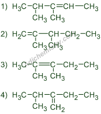
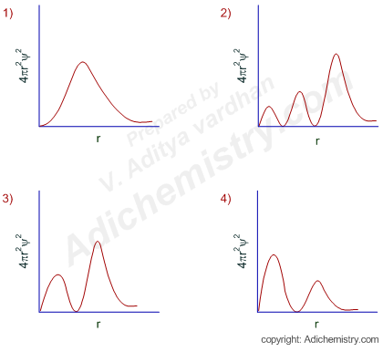

Stage-1
02m 00s
Start
Instructions for round-1
Press the start button to start the quiz
Each question contains one mark each
Min marks to qualify for next round is 3 marks
Total Time given is 2 mins
Q1) For an irreversible reaction A ----> 2B, the rate is increased by four times when the concentration of A is doubled. The incorrect statement about this reaction is:
It is a second order reaction.
Half life is independent of initial concentration of A.
The unit of the specific rate, k is L mol
-1
s
-1
.
Half life is inversely related to the initial concentration of A.
Q2)The expected major product formed in the following dehydration reaction is:

Ans :
Q3) The correct order of ∠FMF bond angles (where M is the central atom) in NSF
3
, SiF
4
and POF
3
is:
NSF
3
> SiF
4
> POF
3
SiF
4
> NSF
3
> POF
3
NSF
3
> POF
3
> SiF
4
SiF
4
> POF
3
> NSF
3
Q4)The outer electronic configuration of metal, M in a diamagnetic complex with the formula, M(NH3)(EtNH2)BrCl is (n-1)d8. It does not give any precipitate with silver nitrate. The correct statement about this complex among the following is:
Exhibits optical activity.
The metal, M undergoes sp3 hybridization.
Can show geometrical isomerism.
Its aqueous solution exhibits electrical conductivity.
Q5) The correct radial probability distribution curve for the hydrogen atomic orbital with principal quantum number, n = 3 and azimuthal quantum number, l = 2 is: (4πr2ψ2 = radial probability density function and r = radial distance from the nucleus)

Ans :
Submit